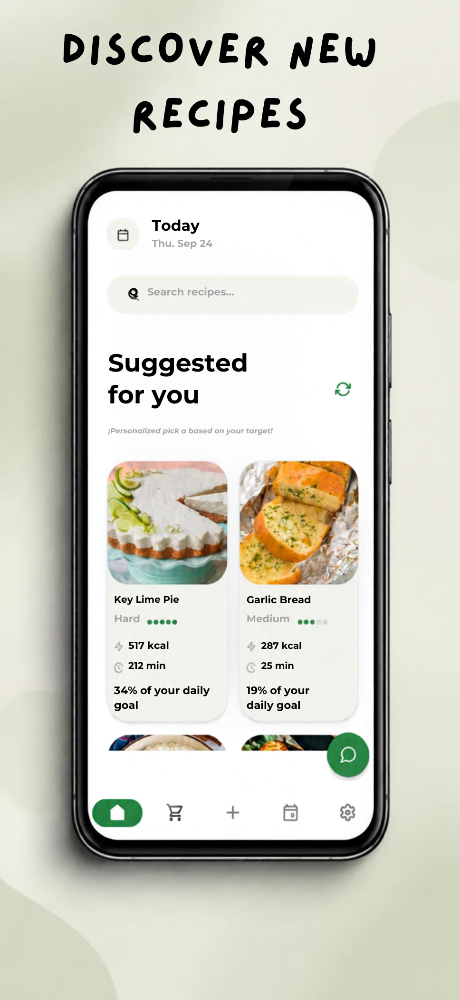
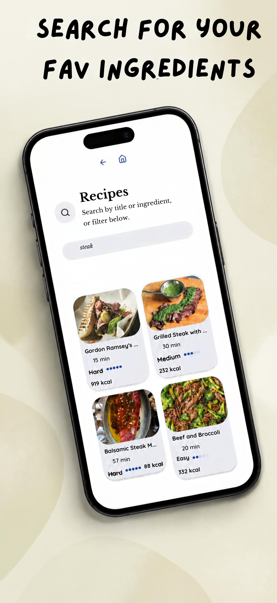
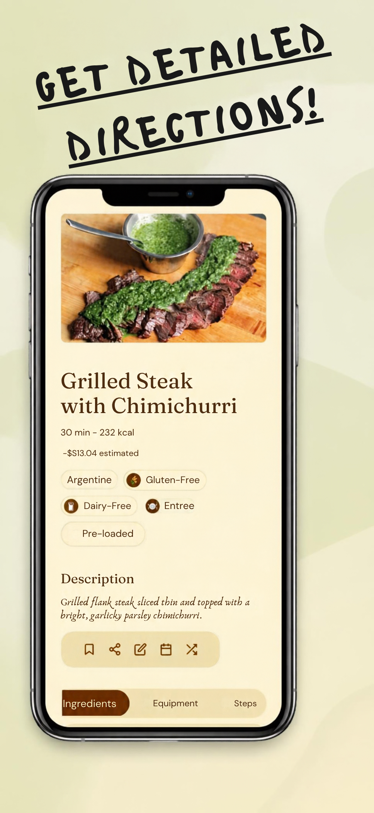
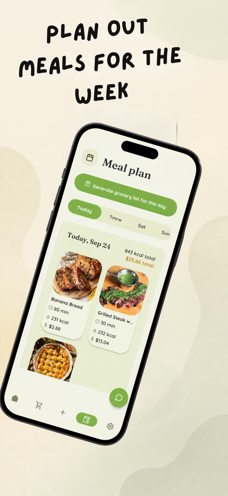
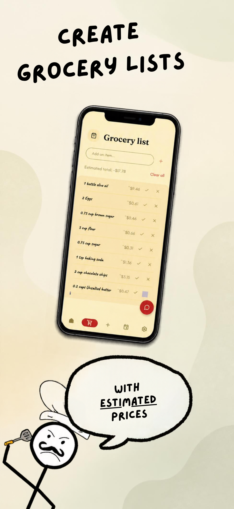
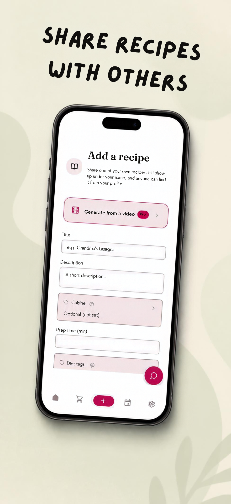
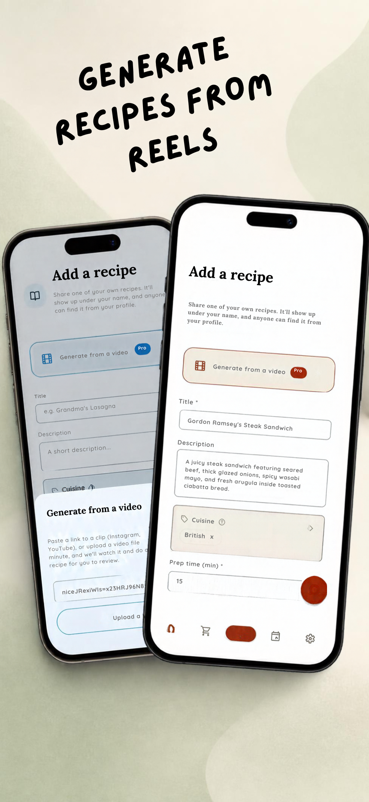
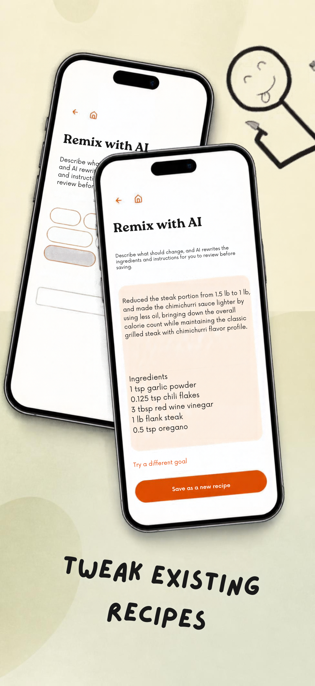
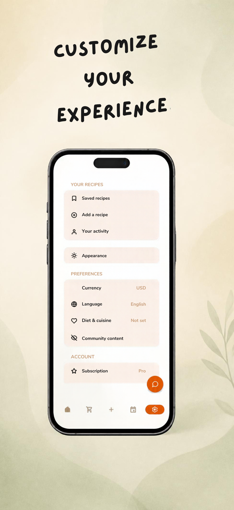

Browse and save recipes, plan your week, and let Easy Dine turn it into a grocery list with real, priced-out estimates — so you know what you're making, and what it costs, before you start.
A full recipe library, weekly planning, and a grocery list that prices itself out — all in one place.

A full recipe library with suggestions personalized to your own goals — search by title, or scroll a feed built around what you're actually trying to eat.

Search by title, or just type what's actually in your fridge — steak, garlic, whatever you've got on hand.

Ingredients, equipment, and step-by-step instructions, plus real nutrition and an estimated cost for the whole dish — not just a list of steps.

Drag recipes onto any day, see that day's total calories and cost at a glance, then generate a grocery list straight from your plan.

Everything you need to buy, combined into a single grocery list with an estimated price per item — so you know the total before you're standing in the aisle.

Add a recipe by hand and it shows up under your name for anyone to find — or skip the typing entirely with the tool below.

Paste a link from Instagram or YouTube, or upload a clip — Easy Dine watches it and drafts the title, ingredients, and steps for you to review and save.

Say what should change — lower-calorie, gluten-free, whatever — and it rewrites the ingredients and instructions for you to review before saving.

Nine color themes, 15 languages, your own currency — Easy Dine looks and reads the way you want it to.
Easy Dine is free to start — download it and see what's for dinner.